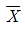
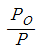
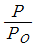
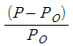
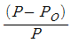
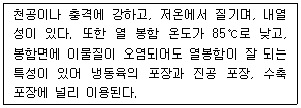

식육가공기사 (2019-09-21 기출문제)
1과목: 식품위생학
1. 대장균(Escherichia coli) 중 출혈성 대장염과 용혈성 요독증상의 원인균으로 최소 세 가지 이상의 베로톡신을 생성하며 E.coli O157:H7이 속해 있는 종류는?
- Enterotoxigenic E. coli (ETEC)
- Enterohemorrhagic E. coli (EHEC)
- Enteroinvasive E. coli (EIEC)
- Enteropathogenic E. coli (EPEC)
(정답률: 70%)

2. 치즈에 대한 기준 및 규격으로 틀린 것은?
- 자연치즈는 원유 도는 유가공품에 응고시킨 후 유청을 제거하여 제조한 것이다.
- 모조치즈는 식용유지가공품이다.
- 가공치즈는 모조치즈에 식품첨가물을 가해 유화시켜 가공한 것이나 모조치즈에서 유래한 유고형분이 50% 이상인 것이다.
- 모조치즈는 식용유지와 단백질 원료를 주원료로 하여 이에 식품 또는 식품첨가물을 가하여 유화시켜 제조한 것이다.
(정답률: 70%)
3. 기생충 중 부적합한 쇠고기 섭취로 감염될 수 있는 것은?
- 유구조충
- 회충
- 편충
- 무구조충
(정답률: 70%)
4. PCB(polychlorinated biphenyl)에 대한 설명으로 틀린 것은?
- 미강유 제조 과정에서 오염된 사례가 있다.
- 중독 환자는 여드름 모양의 피부발진과 발한과다 증상이 나타난다.
- 중독되면 간종양과 간경련을 유발할 수 있다.
- 수중에서는 장기간 잔류하나 토양에서는 단기간에 소멸된다.
(정답률: 70%)
5. Enterotoxin에 대한 설명으로 거리가 먼 것은?
- 포도상구균이 생산하는 독소이다.
- 비교적 내열성이 강하다.
- 주증상은 고온 발열이다.
- 면역하적으로 A, B, C, D, E의 5종으로 나누어진다.
(정답률: 70%)
6. 질병과 관련이 없는 동물의 연결은
- 결핵 – 소
- 탄저 – 소, 말
- 파상열 – 양, 소
- 페디스토마 – 담수어(붕어, 잉어)
(정답률: 62%)
7. 불연속 멸균법(간헐멸균법)의 설명으로 옳은 것은?
- 100℃에서 30분간 3회에 걸쳐 시행하는 것이 보통이다.
- 항온기는 필요하지 않다.
- 고압멸균기가 있어야 실행할 수 있다.
- 포자 형성균에는 적합하지 않다.
(정답률: 77%)
8. 발진티푸스의 원인규 학명은?
- Bacillus anthracis
- Salmonella paratyphi
- Rickettsia prowazeki
- Mycobacterium tuberculosis
(정답률: 62%)
9. 다이옥신과 관계없는 것은?
- 제초제 등 농약 중 불순물로 존재
- 생활쓰레기 소각장
- 발암성 물질
- 중금속
(정답률: 77%)
10. 된장, 고추장에 사용하는 보존료는?
- 베타-나프톨(β-naphtol)
- 안식향산(benzoic acid)
- 소브산(sorbic acid)
- 디히드로초산 나트륨(sodium dehydroacetate)
(정답률: 54%)
11. 식품의 위생검사를 위한 시료채취 방법에 대한 설명으로 틀린 것은?
- 전체 모집단을 대표할 수 있는 균일한 시료를 채취하여야 한다.
- 미생물 검사용 시료는 멸균용기에 무균적으로 채취하고 미생물이 증식하지 않도록 냉동하여 신속히 검사실로 운반하여야 한다.
- 온도를 유지하기 위하여 얼음이나 드라이아이스를 사용할 수 있다.
- 수분항목을 측정할때는 증발 또는 흡습에 의한 수분함량 변화를 방지하기 위하여 꼭 밀폐된 용기를 사용하여야 한다.
(정답률: 77%)
12. HACCP 도입 시 화학적 위해요소와 관련 식품의 연결이 틀린 것은?
- aflatoxin – 옥수수, 땅콩
- prion – 소, 양 등의 식육제품
- ciguatera – 버섯류
- 항생제 – 식육, 양식어류
(정답률: 77%)
13. 신경세포 내의 cholinesterase 작용을 억제함으로써 메스꺼움, 구토, 혈압상승 등의 증상을 일으키는 농약은?
- 카바메이드제
- 유기염소제
- 유기인제
- 비소제
(정답률: 54%)
14. 동물용의약품의 잠정기준적용 시 식육동물 등에 대한 「식품의 기준 및 규격」에 별도로 잔류허용기준이 정해지지 아니한 경우에 최우선 순위의 적용 기준은?
- CODEX 기준
- 유사 식용동물의 잔류허용기준 중 해당부위의 최대 기준
- 일괄적으로 0.03㎎/㎏이하 기준
- MRLs 기준
(정답률: 62%)
15. 방사선 조사식품에 대한 설명으로 틀린 것은?
- 식품을 일정 시간 동안 이온화 에너지에 노출시킨다.
- 발아 억제, 숙도 지연, 보존성 향상, 기생충 및 해충 사멸 등의 효과가 있다.
- 일반적으로 식품을 포장하기 전에 조사처리를 하고 그 후 건조 또는 탈기한다.
- 한 번 조사처리한 식품은 다시 조사하여서는 아니된다.
(정답률: 62%)
16. 식품용 포장재질에 사용되어 식품으로 이행될 수 있는 용제에 해당하지 않는 것은?
- toluene
- hexane
- ethylacetate
- acrylonitrile
(정답률: 54%)
17. 유독성분을 함유하고 있는 동물과 독소와의 연결이 틀린 것은?
- 복어 – tetrodotoxin
- 모시조개 – venerupin
- 섬조개 – saxitoxin
- 독꼬치고기 - cicutoxin
(정답률: 70%)
18. HACCP에 대한 설명으로 틀린 것은?
- 위해요소분석(HA)과 주요관리기준(CCP)을 의미한다.
- 자율적 위생관리에서 정부 주도형 위생관리를 하기 위한 제도이다.
- HACCP 도입업소는 회사의 신뢰성이 향상될 수 있다.
- 위해발생요소를 사전에 관리하는 방법이다.
(정답률: 70%)
19. 다음 중 수용성인 산화방지제는?
- Ascorbic acid
- Butylated hydroxy anisole(BHA)
- Butylated hydroxytoluene(BHT)
- propyl galate
(정답률: 70%)
20. HACCP의 7원칙 12절차에 해당하지 않는 것은?
- HACCP팀 구성
- 중요관리점 결정
- 개선조치 방법 수립
- 사후관리
(정답률: 62%)
2과목: 식육과학
21. 식육 내의 무김물 중 철(Fe)에 대한 설명으로 옳지 않은 것은?
- 미오글로빈은 철과 결합되어 있다.
- 빈혈 치료에 효과적이다.
- 힘철(heme-iron)의 주공급원이다.
- 인체의 뻐와 치아의 주 구성성분이다.
(정답률: 62%)
22. 식육의 냉동 저장 중 일어나는 변화로 옳지 않은 것은?
- 동결된 식육내의 얼음결정은 매우 안정하여 일단 형성된 다음에는 형태 변화가 일어나지 않는다.
- 부패팽창에 의한 조직손상은 동결속도에 따라 영향을 받으며, 완만한 냉동 시 더욱 심하게 나타난다.
- 동결이 완료되면 식육성분의 재구성이 일어난다.
- 비포장 식육에서는 냉동 저장 중 수분이 곧바로 증발되어 중량감소가 일어난다.
(정답률: 70%)
23. 식육의 근육조직 중 비타민에 관한 설명으로 옳지 않은 것은?
- 비타민 B군은 각종 효소와 생리활성물질들의 보조효소로 작용한다.
- 식육의 비타민 함량은 근육 부위에 따라 차이가 없다.
- 비타민은 적은 양으로 체내 생리기능을 조절하며 물질대사가 완전하게 일어나도록하는 유기화합물이다.
- 돼지고기는 소고기, 닭고기보다 더 많은 비타민 B1을 함유하고 있다.
(정답률: 54%)
24. 골격근 구조에 대한 설명으로 옳지 않은 것은?
- 근섬유 여러개가 모여 하나의 근속(근다발)을 이룬다.
- 근섬유의 운동단위는 Z선에 의해 구분되는 근절이다.
- 초원섬유의 암대(A-band)는 미오신 필라멘트 길이와 일치한다.
- 초원섬유의 가는 필라멘트는 미오신, 트로포미오신, 트로포닌으로 구성된다.
(정답률: 70%)
25. 생체중이 800㎏인 소를 도축하여 도체중이 500㎏이고 뼈 무게가 100㎏일 경우 정육률은 얼마인가?
- 30%
- 40%
- 50%
- 60%
(정답률: 70%)
26. 소 도체에서 나타나는 이상육의 종류와 특징으로 옳지 않은 것은?
- 다발성 근출혈 – 근육 내에 반점모양의 검은 혈액응고물이 얼룩처럼 보임
- 수종 – 세포간격과 체공에 여분의 조직액이 쌓인 상태
- 근염 – 근지방증, 지방치환육 등으로 불리는 과도한 지방이 축적된 근육
- 황색지방 – 근내지방을 높일 목적으로 비타민 A의 급여를 제한할 경우 발생
(정답률: 47%)
27. 돼지고기 뒷다리육의 구성성분에 대한 설명으로 옳은 것은?
- 수분 함량은 약 45% 수준이다.
- 단백질 함향은 약 20% 수준이다.
- 지방 함량은 약 30% 수준이다.
- 탄수화물은 존재하지 않는다.
(정답률: 62%)
28. 식육의 단백질 중 근원섬유단백질로 옳지 않은 것은?
- 미오신
- 레티쿨린
- 액틴
- 트로포미오신
(정답률: 62%)
29. 식육의 지질에 대한 설명으로 옳은 것은?
- 식육의 구성성분 중 축종, 부위 등에 따라 함량의 변동이 가장 적다.
- 축적지방은 대부분 인지질로 구성되어 있다.
- 소고기 지방의 융점(녹는점)은 닭고기 지방보다 낮다.
- 소고기, 돼지고기, 닭고기 모두 가장 많은 비중을 차지하는 지방산은 올레산이다.
(정답률: 47%)
30. 식육의 구성 성분에 대한 설명으로 옳지 않은 것은?
- 식육은 철의 좋은 공급원이다.
- 식육에 존재하는 비타민 B군의 함량은 비타민 C군보다 높다.
- 식육에 존재하는 비타민 B군은 자외선에 안정적이다.
- 식육에 존재하는 셀레늄은 인체의 필수 미량원소이다.
(정답률: 54%)
31. 신선육의 육색을 결정하는 육색소로 옳은 것은?
- 트로포닌
- 미오글로빈
- 액틴
- 레티쿨린
(정답률: 70%)
32. 식육의 풍미물질 형성과정에 관련이 없는 것은?
- 지방반응
- 핵산물질 분해
- 티아민(thiamin)의 분해
- 마이야르(maillard) 반응
(정답률: 54%)
33. 소 도체 육질등급 평가 기준에 속하지 않는 것은?
- 등지방 두께
- 성숙도
- 조직감
- 육색
(정답률: 62%)
34. 사후근육 내 혐기성 대사의 최종 생성물은?
- 젖산
- 글리코겐
- ATP
- 아세트산
(정답률: 70%)
35. 식육부패 미생물에 관한 설명으로 옳지 않은 것은?
- 미생물에 의해 단백질이 분해되어도 pH변화에 영향을 미치치 않는다.
- 단백질, 지방, 탄수화물은 미생물의 효소에 의해 분해된다.
- 미생물에 의한 최종 생산물은 미생물의 종류와 이용 가능한 영양소에 따라 다르게 나타난다.
- 미생물에 의한 지방 분해는 지방 산화를 가속화시켜 산패취를 형성한다.
(정답률: 62%)
36. 콜라겐에 대한 설명으로 옳지 않은 것은?
- 결합조직 단백질로 진피, 인대, 힘줄에 많이 함유된 섬유상 단백질이다.
- 가수가열(약 63℃)하면 콜라겐 삼중나선의 입체구조가 파괴되고 비가역적으로 수축을 일으켜 비결정 형태의 젤라틴으로 전환된다.
- 콜라겐은 펩신과 콜라겐 분해효소를 통해 분해시킬 수 있다.
- 콜라겐은 트립토판, 시스테인, 시스틴 등을 많이 함유하고 있다.
(정답률: 62%)
37. 식육의 변색에 영향을 주는 요인에 대한 설명으로 옳지 않은 것은?
- 식육의 색은 식육의 온도에 민감하게 반응한다.
- 식육 표면의 건조는 미오글로빈의 산화를 유발한다.
- 식육에서 미생물이 증식하면 변색을 유발한다.
- 식육 내 금속이온들은 미량이기 때문에 변색에 영향을 미치치 않는다.
(정답률: 70%)
38. 식육의 영향적 가치에 관한 설명으로 옳지 않은 것은?
- 식육의 단백질은 필수아미노산을 함유하고 있어 신체의 성장과 유지를 원활하게 해 준다.
- 식육의 지질은 인체에 열량을 공급하는 주요 열량원이다.
- 식육의 탄수화물은 글리코겐 형태로 저장되어 인체에 많은 열량을 공급한다.
- 식육은 인체에 다양한 비타민과 미네랄을 제공하여 신체기능 유지에 도움이 된다.
(정답률: 54%)
39. 육색에 관한 설명으로 옳지 않은 것은?
- 식육내 존재하는 전 색소의 80~90%는 미오글로빈이 차지한다.
- 미오글로빈은 헴링(heme ring)을 가지고 있다.
- 헴링(heme ring) 한가운데에 철원자(Fe)가 존재한다.
- 고기의 색깔은 미오글로빈의 철원자가 2가(Fe2+)이면 갈색이 되고 3가(Fe3+)이면 적자색이 된다.
(정답률: 70%)
40. 식육의 풍미를 유지하는 것과 거리가 먼 방법은?
- 진공포장
- 산소투과포장
- 가스치환포장
- 비타민 E 첨가
(정답률: 70%)
3과목: 식육가공학
41. 유화형 소시지의 세절을 위한 재료 투입 순서를 올바르게 나열한 것은?
- 지방육 → 인산염 및 염지소금 → 얼음 → 적육 → 향신료
- 적육 → 얼음 → 인산염 및 염지소금 → 향신료 → 지방육
- 적육 → 인산염 및 염지소금 → 얼음 → 지방육 → 향신료
- 지방육 → 적육 → 얼음 → 인산염 및 염지소금 → 향신료
(정답률: 54%)
42. 건조저장 육류 제품의 원료육에 대한 설명으로 옳지 않은 것은?
- 주로 지방 함량이 높은 식육을 사용한다.
- 근막을 최대한 제거하여 섭취 시 치아손상이나 치아잔존물 발생을 최소화한다.
- 우육의 경우에는 주로 홍두께와 우둔을 사용한다.
- 돈육의 경우에는 주로 등심 또는 후지를 사용한다.
(정답률: 62%)
43. 고기유화물에서 물과 지방이 유화할 수 있도록 계면활성제 역할을 하는 단백질은?
- 수용성 단백질
- 근장 단백질
- 염용성 단백질
- 육색소 단백질
(정답률: 62%)
44. 단순조미료의 구분과 종류가 잘못 짝 지어진 것은
- 감미료 – 올리고당
- 산미료 – 저산
- 염미료 – 식염
- 지미료 – 글루코노델타락톤(GDL)
(정답률: 54%)
45. 양념육의 일반 제조공정과 거리가 먼 것은?
- 절단
- 혼합
- 숙성
- 발효
(정답률: 62%)
46. 생햄 제조에 관한 설명으로 옳지 않은 것은?
- 원료육의 pH는 6.0 이하인 것이 좋다.
- 염지방법에는 건염법, 습염법, 주사법 등이 있다.
- 육질이 부드러운 어린 돼지를 사용하는 것이 적절하다.
- PSE육 또는 DFD육과 같은 이상육은 원료육으로 부적절하다.
(정답률: 62%)
47. 식육가공에 사용하는 소금(NaCl)의 기능으로 옳지 않은 것은?
- 풍미 증진
- 저장성 증진
- 염용성 단백질 추출
- 수분활성도 증가
(정답률: 54%)
48. 양념육을 상품화할 때 주의해야 할 사항으로 옳지 않은 것은?
- 전통적인 양념육(간장, 고추장 사용) 제조시에는 한꺼번에 많은 양을 만들어 놓지 않도록 한다.
- 파, 마늘, 생강, 양파 등의 양념채소들은 대부분 뿌리채소이므로 생으로 사용할 경우 토양균에 의한 오염가능성을 예상할 수 있다.
- 당일 판매량만큼만 하루 전에 준비하여 냉장 보관하였다가 진열 판매하는 것이 바람직하다.
- 국물이 있는 간장양념육은 깊이가 낮은 트레이에 담아 팹 포장하는 것이 좋다.
(정답률: 54%)
49. 육제품 제조 시 허용되지 않는 보존료는?
- AF2
- 젖산
- 소브산(sorbic acid)
- 소브산칼륨(potassium sorbate)
(정답률: 54%)
50. 육제품의 가열처리 과정 중에 일어나는 변화로 옳은 것은?
- 단백질의 망상구조에 둘러싸인 지방은 가열에 의해 응고된다.
- 근원섬유 단백질들이 겔상태에서 졸상태로 변하므로 삼차원적인 단백질의 망상구조가 형성된다.
- 염용성 단백질의 열에 의한 응고는 40℃에서 시작되며, 수용성 단백질은 이보다 조금 높은 50℃부터 응고되기 시작한다.
- 열처리 온도가 첫 단계인 30~50℃에 이르면 구형인 마이오신의 머리 부분이 응집되기 시작하여 가역적인 구조변화를 보이게 된다.
(정답률: 47%)
51. 우리나라 염지 육제품에 사용되는 아질산염 사용 규격으로 옳은 것은?
- 아질산염 첨가지준 150ppm 이하
- 아질산염 잔존기준 70ppm 이하
- 아질산염 이온 첨가지준 150ppm 이하
- 아질산 이온 잔존기준 70 ppm 이하
(정답률: 47%)
52. 식육가공품에 물을 첨가하는 목적과 거리가 먼 것은?
- 염지재료의 용해
- 보수력 증진
- 가공 중 수분 손실 보상
- 생산비 절감
(정답률: 54%)
53. 발효소시지의 제조에 관한 설명으로 옳지 않은 것은?
- 발효소시지 제조에 적합한 원료육의 pH는 5.4~5.8이다.
- 발효소시지는 건조 과정에서 수분손실이 발생하기 때문에 많은 양의 수분을 첨가 한다.
- 발효소시지의 자연 숙성에 적합한 온도는 약 12~15℃이다.
- 첨가된 미생물의 종류에 따라 다양한 맛을 낼 수 있다.
(정답률: 62%)
54. 케이싱의 종류 중 훈연 연기를 흡수하고 수분 투과성이 있으면 식용이 가능한 것은?
- 화이브러시 케이싱
- 천연 케이싱
- 플라스틱 케이싱
- 셀룰로오스 케이싱
(정답률: 62%)
55. 식육제품의 품질관리에 관한 설명으로 옳지 않은 것은?
- 품질관리 활동으로 인해 생산비용이 무한히 증가한다.
- 품질관리의 주된 목적은 우수한 제품을 경제적으로 생산함에 있다.
- 식육제품의 효과적인 품질관리를 위해서는 모든 품질특성의 수량화가 필요하다.
- 명확한 품질기준의 설정은 품질관리에 도움을 준다.
(정답률: 62%)
56. 당일 생산된 동일한 소시지 중 10개를 랜덤 추출하여 무게(㎏)를 측정한 결과가 (100, 102, 102,103, 104, 1⑤, 106, 108, 110, 110)이면 표본의 평균( ) 및 분산(S2)으로 옳은 것은?
) 및 분산(S2)으로 옳은 것은?

= 103, S2 = 10.8 = 103, S2 = 12.0
= 103, S2 = 12.0 = 1⑤, S2 = 10.8
= 1⑤, S2 = 10.8 = 1⑤, S2 = 12.0
= 1⑤, S2 = 12.0
(정답률: 47%)
57. 직접 훈연법이 아닌 것은?
- 냉훈법
- 온훈법
- 열훈법
- 액훈법
(정답률: 62%)
58. 식육의 유화와 관련된 설명으로 옳지 않은 것은?
- 적색근육이 백색근육보다 유화력이 우수하다.
- 단백질 농도가 증가함변 유화력 또한 비례하여 증가한다.
- 숙성을 거친 육의 최종 pH가 정상보다 높거나 낮을 경우 유화력이 좋지 못하다.
- 유화물 형성 시 온도가 20℃를 넘게 되면 유화가 깨지기 쉽다.
(정답률: 47%)
59. 무균 통조림의 제조공정 순서로 옳은 것은
- 가권체 → 조리가공 → 밀봉 → 탈기 → 멸균 → 냉각
- 조리가공 → 가권체 → 밀봉 → 탈기 → 냉각 → 멸균
- 조리가공 → 가권체 → 탈기 → 밀봉 → 멸균 → 냉각
- 조리가공 → 가권체 → 밀봉 → 냉각 → 탈기 → 멸균
(정답률: 62%)
60. 육제품의보수력 증징을 목적으로 사용하는 첨가물로 옳지 않은 것은?
- 소금
- 인산염
- 대두단백
- 소브산(sorbic acid)
(정답률: 39%)
4과목: 축산식품 관련 규정
61. 살균한 식육추출가공품의 리스테리아 모노사이토제네스의 규격은?
- n=5, c=0, m=0/25g
- n=5, c=1, m=0/25g
- n=5, c=2, m=0/25g
- n=5, c=3, m=0/25g
(정답률: 47%)
62. 포장육에 대한 설명으로 옳지 않은 것은?
- 판매를 목적으로 식육을 절단한 후에 첨가물 도는 다른 식품을 첨가하여 냉장 또는 냉동한 것을 말한다.
- 휘발성 염기질소는 20㎎% 이하여야 한다.
- 보존료는 검출되어서는 아니 된다.
- 분쇄한 제품에 대해서는 장출혈성 대장균을 관리해야 한다.
(정답률: 24%)
63. 장기보존식품인 통ㆍ병조림식품에 대한 설명으로 옳지 않은 것은?
- 멸균은 제품의 중심온도가 120℃, 4분간 또는 이와 동등 이상의 효력을 갖는 방법으로 열처리하여야 한다.
- pH가 4.6 이하인 산성식품은 가열 등의 방법으로 살균처리할 수 있다.
- 세균발육이 음성이어야 한다.
- 캔 제품의 주석은 100㎎/㎏ 이하이여야한다.(알루미늄 캔을 제외한 캔 제품에 한 하며, 산성 통조림은 150㎎/㎏ 이하이어야 한다.
(정답률: 39%)
64. 식품의약품안전처장이 정하여 고시하는 기준이 아닌 것은?
- 축산물의 성분에 관한 규격
- 가축의 도살, 처리 및 집유기준
- 축산물의 위생등급에 관한 기준
- 축산물의 가공ㆍ포장ㆍ보존 및 유통의 방법에 관한 기준
(정답률: 47%)
65. 닭, 오리의 식육을 비포장 판매 시 위생요건으로, 진열시설 내 온도기준으로 옳은 것은?
- -5~0℃
- -2~5℃
- 0~5℃
- 0~10℃
(정답률: 47%)
66. 축산물의 보존 및 유통 기준으로 옳지 않은 것은?
- 상온에서 7일 이상 보존성이 없는 식품은 가능한 한 냉장 또는 냉동시설에서 보관 유통하여야 한다.
- 가금육 및 가금육 포장육의 냉장 제품은 –2~10℃에서 보존 및 유통 하여야 한다.
- 냉동 도는 냉장제품의 운반은 적절한 온도를 유지할 수 있는 냉동 또는 냉장차량이거나 이와 동등 이상의 효력이 있는 방법으로 하여야 한다.
- 해동된 냉동제품을 다시 냉동해서는 안 되지만, 냉동식육의 절단 또는 뼈 등의 제거를 위해 해동한 경우에는 작업 후 즉시 냉동하는 것은 가능하다.
(정답률: 47%)
67. 햄류에 대한 기준 및 규격으로 옳지 않은 것은?
- 생햄은 식육의 부위를 염지한 것이나 이에 식품첨가물을 가하여 저온에서 훈연 또는 숙성ㆍ건조한 것을 말한다(뼈나 껍질이 있는 것도 포함한다)
- 햄은 식육을 부위에 따라 분류하여 정형 염지한 후 숙성ㆍ건조하거나 훈연 또는 가열처리하여 가공한 것을 말한다(뼈나 껍질이 있는 것도 포함한다).
- 햄류 내 아질산 이온은 0.⑤g/㎏ 미만이어야 한다.
- 어육을 혼합하여 프레스햄을 제조하는 경우 어육은 전체 육함량의 10% 미만이어야 한다.
(정답률: 39%)
68. 검체채취 기구 및 용기에 관한 내용으로 옳지 않은 것은?
- 검체채취 기구 및 용기는 검체의 종류, 형상, 용기ㆍ포장 등이 다양하므로 검체의 수거 목적에 적절한 기구 및 용기를 준비하여야 한다.
- 「기구 및 용기ㆍ포장의 기준ㆍ규격」에 적합한 것이어야 한다.
- 기구 및 용기는 운반, 세척, 멸균에 편리한 것이어야 하며 미생물 검사를 위한 검체 채취의 기구ㆍ용기 중 검체와 직접 접촉하는 부분은 반드시 살균 처리하여야 한다.
- 검체와 직접 접촉하는 기구 및 용기는 검사결과에 영향을 미치지 않는 것이어야 한다.
(정답률: 39%)
69. 식육가공품의 유통기간 설정 방법으로 옳지 않은 것은?
- 유통기간의 산출은 포장완료 시점을 기준으로 하는 것이 원칙이다.
- 식육즉석판매가공업소에서 양념육을 공급받아 덜어서 판매하는 경우, 기존 유통기간 이내에서 포장재질, 보존조건, 제조방법 등을 고려하여 유통기한을 정할 수있다.
- 단순가공처리만을 하는 제품은 유통기한이 먼저 도래하는 원료 제품의 유통기한을 최종 제품의 유통기한으로 정하여야 한다.
- 수출을 목적으로 하는 제품은 수입자가 요구하는 기준에 따라 유통기하을 설정할 수 없다.
(정답률: 47%)
70. 식품위생법에 근거하는 자가품질검사의무의 면제사유로 옳은 것은?
- 식품등을 제조ㆍ가공하는 영업자가 제조ㆍ가공하는 식품등이 기준과 규격에 맞는지 검사를 원하는 경우
- 식품위생법 제48조 제3항(식품안전관리인증기준)에 따른 식품안전관리인증기준적용업소가 제31조(자가품질검사 의무) 제1항에 따른 검사가 포함된 식품안전관리 인증기준을 지키는 경우
- 식품안전관리인증기준적용업소에 대하여 식품위생법 시행규칙 제66조(식품안전관리인증기준적용업소에 대한 조사ㆍ평가) 제1항에 따른 조사ㆍ평가한 결과가 만점의 50퍼센트 이상인 경우
- 면제사유는 존재하지 않음
(정답률: 47%)
71. 식용우지에 사용하는 몰식자산 프로필의 역할은?
- 증량제
- 산미제
- 산화방지제
- 과산화물
(정답률: 39%)
72. 영업 변경 허가를 받아야 하는 경우가 아닌 것은?
- 영업자의 성명 변경 시
- 영업장의 상호 변경 시
- 영업장의 부자재창고 변경 시
- 집유장의 저유조 변경 시
(정답률: 47%)
73. 식품의 유형별 유통기간 설정 실험 지표가 올바르게 연결된 것은?
- 햄류 – 휘발성염기질소, pH, 산가, 세균수, 대장균군, 성상
- 포장육 – 휘발성염기질소, 산도, 세균수, 대장균군, 대장균, 성상
- 식육추출가공품 – 휘발성염기질소, pH, 세균수, 대장균, TBA가
- 식육함유가공품 – TBA가, 휘발성염기질소, 세균수, 대장균군, 성상
(정답률: 39%)
74. 동물성 원료 중에서 식품에 사용할 수 있는 원료로 옳지 않은 것은?
- 타조의 알
- 뉴트리아의 고기
- 소의 태아
- 캥거루의 고기
(정답률: 47%)
75. 소시지류에 대한 설명으로 옳지 않은 것은?
- 저온에서 발효시켜 숙성 또는 건조 처리한 것이거나, 또는 케이싱에 충전하여 냉장ㆍ냉동한 것을 말한다.(육 함량 70% 이상, 전분 10% 이하의 것)
- 건조 소시지류는 수분을 35% 이하로, 반건조 소시지류는 수분을 55% 이하로 가공하여야 한다.
- 발효소시지는 식육(육함량 중 20% 미만의 알류를 혼합한 것도 포함)에 다른 식품 또는 식품첨가물을 가한 후 숙성ㆍ건조시킨 것, 훈연 또는 가열처리한 것 또는 케이싱에 충전 후 냉장ㆍ냉동한 것을 말한다.
- 식육을 분쇄하여 케이싱에 충전 후 냉장 또는 냉동한 제품에는 충전용 내용물에 내장을 사용하여서는 아니 된다.
(정답률: 39%)
76. 검체의 채취 요령으로 옳은 것은?
- 검체가 불균질할 떼에는 일반적으로 소량의 검체가 필요하다.
- 식품등의 특성상 침전, 부유 등으로 균질하지 않은 제품의 경우 가능한 한 침전물 또는 부유물을 대표적으로 채취하여야 한다.
- 깡통, 병, 상자 등 용기 포장에 넣어 유통되는 식품 등은 가능한 한 개봉하여 멸균용기에 옮겨 채취한다.
- 대형 용기 포장에 넣은 식품 등은 검사대상 전체를 대표할 수 있는 일부를 채취할 수 있다.
(정답률: 31%)
77. 햄류의 유형에 해당하지 않는 것은?
- 햄
- 생햄
- 프레스햄
- 혼합프레스햄
(정답률: 47%)
78. 식육가공품 중 식품별 1회 섭취량과 시장조사결과 등을 바탕으로 설정한 1회 섭취 참고량이 가장 높은 제품은?
- 소시지류
- 갈비가공품
- 건조저장육류
- 분쇄가공육제품
(정답률: 39%)
79. 축산물에 대한 영업을 하고자 할 경우, 신고가 아닌 보고에 해당하는 것은?
- 영업자 소재지를 변경하는 경우
- 자가 식육을 포장처리하는 경우
- 같은 작업장에서 도살ㆍ처리하는 가축의 종류를 변경하는 경우
- 같은 작업장에서 다른 종류의 가축을 도살ㆍ처리하기 위하여 설치된 시설을 변경하는 경우
(정답률: 47%)
80. 베이컨류의 정의로 옳은 것은?
- 식육을 그대로 또는 이에 식품 또는 식품첨가물을 가하여 건조하거나 열처리하여 건조한 것
- 돼지의 복부육(삼겹살) 또는 특정부위육(등심육, 어깨부위육)을 정형한 것을 염지한 후 그대로 또는 식품 또는 식품첨가물을 가하여 훈연하거나 가열처리한 것
- 식육(전체 육함량 중 20% 미만의 어육 또는 알류를 혼합한 것도 포함)에 다른 식품 또는 식품첨가물을 가한 후 숙성ㆍ건조시킨 것
- 식육의 고깃덩어리를 염지한 것이거나 이에 식품 또는 식품첨가물을 가한 후 숙성ㆍ건조하거나 훈연 또는 가열처리한 것으로 육함량 75% 이상, 전분 8% 이하의 것
(정답률: 39%)
5과목: 제품저장 및 유통학
81. 상품의 제조원가 구성요소로 옳지 않은 것은?
- 재료비
- 노무비
- 제조경비
- 이윤
(정답률: 47%)
82. 염지육제품의 저장성과 관련 없는 첨가물은?
- 소금
- 인산염
- 유청단백질
- 아스코르빈산(ascorbic acid)
(정답률: 47%)
83. 신선식육 냉각 시 열이 제거되는 속도와 관련된 사항으로 옳지 않은 것은?
- 식육의 무게
- 냉각초기온도
- 열전도
- 수분활성도
(정답률: 39%)
84. 순수한 물의 증기압(Po)과 식품 속에 존재하는 물의 증기압(P)에 의해 결정되는 수분활성도(aw)의 공식으로 옳은 것은?




(정답률: 39%)
85. 식육의 경우 냉동 또는 냉장 상태에서 보관되는데, 이때 발생 가능한 저온성 부패유발 미생물은?
- Pseudomonas
- Lactobacillus
- Muear
- Micrococcus
(정답률: 47%)
86. 식품 보존제로 분류되지 않는 것은?
- 초산
- 소브산(sorbic acid)
- 토코페롤(tocopherol)
- 안식향산(benzoic acid)
(정답률: 39%)
87. 육제품을 견고한 포장재 위에 올려놓고 가열에 의해 신축성이 증가한 포장재를 덮어 진공으로 감압, 탈기함으로서 제품의 모양에 따라 밀착시키는 포장방법은?
- 함기 포장
- 랩 포장
- 가스치환 포장
- 스킨 포장
(정답률: 47%)
88. 다음 중 유통 조성기능에 속하는 것은?
- 가공기능
- 구매기능
- 수송기능
- 표준화 및 등급화 기능
(정답률: 39%)
89. 가속저장실험 과정에서 반응 온도를 20℃에서 30℃로 증가시켰을 때 속도상수가 4배 증가 하였다. 이때 활성화에너지는 얼마인가?
- 51KJ/mol
- 102KJ/mol
- 155KJ/mol
- 204KJ/mol
(정답률: 31%)
90. 식육의 방사선 조사에 의한 생화학적 변화에 대한 설명으로 옳지 않은 것은?
- 육단백질의 보수력이 증가한다.
- 비타민C와 티아민이 파괴된다.
- 단백질과 결합된 아미노산의 파괴는 거의 일어나지 않는다.
- 산소가 존재하는 경우 과산화물 및 카아보닐 화합물이 형성된다.
(정답률: 39%)
91. 축산식품 유통경로에 대한 설명으로 옳은 것은?
- 유통경로란 생산자에서 소비자에게 축산식품이 유통되어 가는 통로를 말한다.
- 유통경로는 축산식품의 종류에 따라 차이가 없다.
- 육계는 도계장을 거치지 않더라도 유통될 수 있다.
- 경로가 짧고 단순하여 유통비용이 많이 소요되지 않도록 한다.
(정답률: 39%)
92. 다음은 어떤 포장재에 대한 설명인가?

- 아이오노모(Ionomer)
- 알루미늄박(aluminium)
- 폴리아마이드(polyamide, PA)
- 폴리염화비닐리덴(polyvinyliden chloride, PVDC)
(정답률: 39%)
93. 다음 살균처리 기술 중 특성이 다른 것은?
- 레토르트 처리
- 초고압 처리
- 방사선 조사
- 고전압 펄스 전기장 처리
(정답률: 47%)
94. 도체 입고 전에 소와 돼지의 도체 온도를 신속하게 떨어뜨리기 위한 예냉실 공기의 적정온도는?
- -8~-5℃
- -4~0℃
- 1~5℃
- 10~15℃
(정답률: 31%)
95. 냉장 중 발생하는 변패성 미생물에 대한 설명으로 옳지 않은 것은?
- 변패성 미생물은 그람음성 간균, 그람양성 포자형성균, 젖산균, 그람양성균, 효모 및 곰팡이로 구분된다.
- 냉장 중 신선육에 성장할 수 있는 그람음성 간균으로는 Bacillus속이 있다.
- 그람양성 포자형성균에는 Clostridium속이 있다.
- 진공포장육의 주요 변패를 일으키는 대표적 젖산균에는 Lactobacillus, Streptococcos, Leuconostoc 등이 있다.
(정답률: 24%)
96. 식품의 저장수명에 대한 설명으로 옳지 않은 것은?
- 국내 식품의 유통기한은 제조일로부터 소비자에게 판매가 허용되는 기한이다.
- 상용 저장수명이란 일반적으로 소비자가 먹을 수 잇는 수준이라고 판단되는 시점까지의 저장기간이다.
- 차이식별 저장수명이란 저장하지 않은 대조구와 비교하여 처음으로 관능적 품질 차이를 느끼게 되기까지의 저장기간이다.
- 고품질 저장수명이란 삼정비교실험에서 50%이상의 검사원이 신선한 대조구와 저장품 사이의 차이를 식별하게 되는 시점을 종점으로 하는 저장기간이다.
(정답률: 39%)
97. 발효육제품 제조 공정에서 일어나는 육제품의 물리･화학적 변화가 아닌 것은?
- pH가 육단백질의 등전점 가까이로 떨어져 보수력이 낮아진다.
- 단백질, 지방, 당 등의 분해에 의해 풍미물질이 생성된다.
- 식육에서 삼출된 염용성 단백질이 지방입자와 분리되어 결착력이 떨어진다.
- 미생물의 수는 발효 초기에 급격하게 증가하다가 발효가 진행됨에 따라 점차 감소한다.
(정답률: 39%)
98. 육제품 포장제에 대한 설명으로 옳지 않은 것은?
- 가스와 빛을 차단할 수 있어야 한다.
- 기계적 강도가 낮아야 한다.
- 가격이 저렴하고 재활용이 용이해야 한다.
- 밀폐시 밀봉성이 우수해야 한다.
(정답률: 39%)
99. 물류와 관련한 용어에 대한 설명으로 옳지 않은 것은?
- 물류란 식육제품의 수송, 보관, 포장, 하역의 물자 유통활동과 물류에 관련되는 정보가 포함된다.
- 로지스틱스(logistics)는 광의의 물류로 원재료의 조달지역에서부터 최종소비지점에 이르기까지 상품의 이동과 보관 활동에 한정한다.
- 물류비에는 생산지에서 소비지까지의 수송비용 등 직접비용과 물류지원에 필요한 부수비용도 포함된다.
- 수배송의 공동화는 수송단위의 적재효율을 높이기 위해 2인 이상의 사업자가 공동으로 수송과 배송을 하는 물류공동화의 일종이다.
(정답률: 47%)
100. 냉동육의 품질저하를 막는 방법으로 옳은 것은?
- 급속히 냉동한다.
- 식육 내의 얼음결정을 크게 한다.
- 저장 온도를 낮춰 스증기압을 크게 유지한다.
- 식육의 빙결점 부근에서 보존한다.
(정답률: 39%)